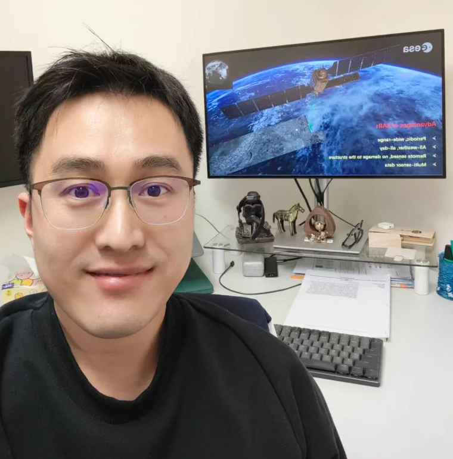
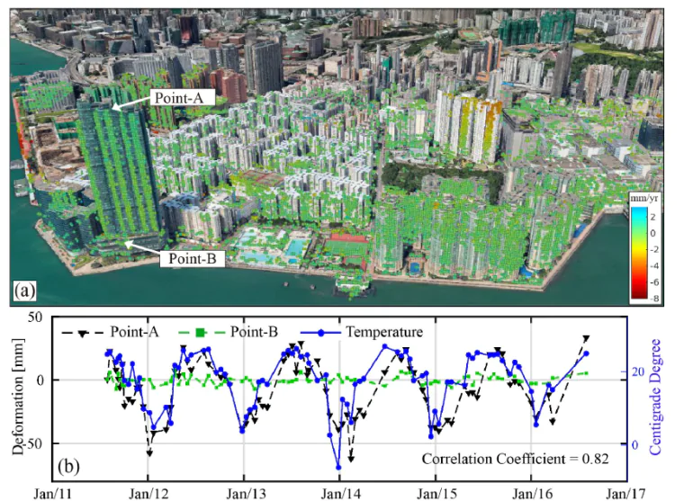
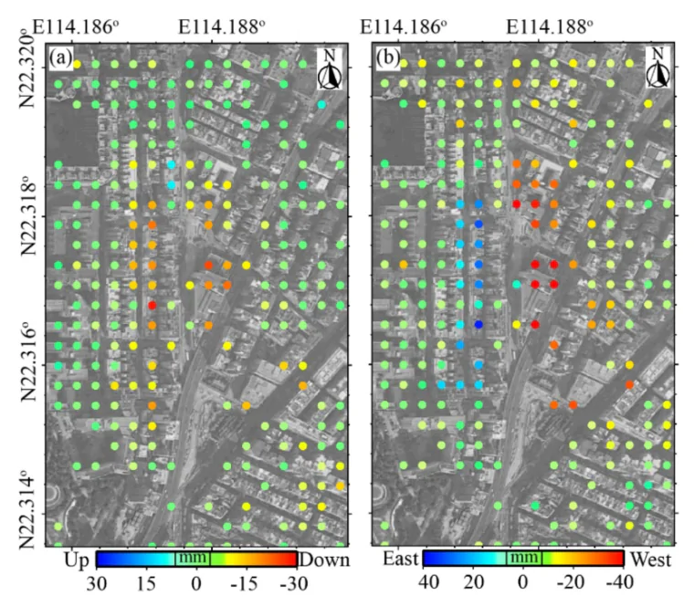
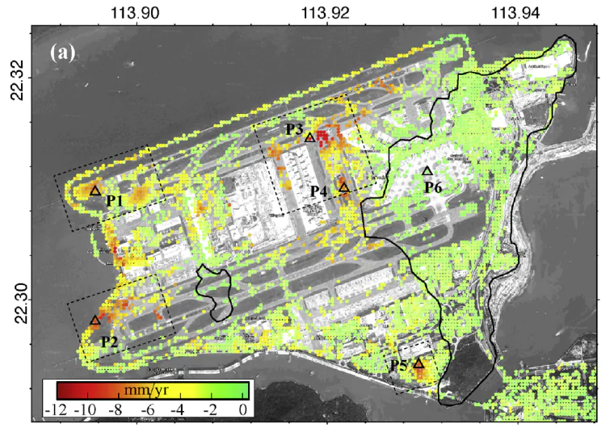

Geomatics · Earth observation
Dr. Songbo Wu
Research Assistant Professor
Department of Land Surveying and Geospatial Science
The Hong Kong Polytechnic University
I use satellite and ground-based radar to measure how cities, infrastructure and coastlines change.

01 / About
Measuring change
from space and the ground.
My research uses multi-temporal interferometric synthetic aperture radar (InSAR) to monitor ground deformation and environmental hazards. I combine satellite and ground-based observations to study infrastructure, coastal environments and areas affected by urban construction.
I work on multi-sensor data fusion, deformation uncertainty assessment and satellite mapping of construction and land-use change.
Appointments, education and service02 / Research
Research in focus

InSAR methods
Improving the reliability of deformation measurements in complex environments.

Infrastructure stability
Tracking deformation in buildings, bridges and transport networks.

Coastal change
Reconstructing long-term settlement and studying changes in reclaimed and coastal land.
03 / Publications
Recent work
HotSAM: A Hotspot-Spatial-Adaptive Multi-Resolution Framework for Efficient Long-Term Deformation Monitoring in Terrestrial Radar Interferometry
Liu, Y., Zhang, Z., Wu, S.*, and Ding X. · ISPRS Journal of Photogrammetry and Remote Sensing, vol. 242, pp. 898-913.
A Novel Two-Stage Adversarial Joint Learning Model for Reconstructing InSAR Phase in Decorrelated Areas
Abdallah, M., Wu, S.*, and Ding, X. · Science of Remote Sensing, 13, 100373.
Comparative Analysis of PS-InSAR and DS-InSAR for Deformation Monitoring of Transportation Infrastructure in Greater Bay Area, China
Wu, S., Zhang, B., Li, Y., Xiong, S., & Ding, X. · Remote Sensing Applications: Society and Environment, 101872.
* indicates work completed under my supervision.
Leading an MTR Research Funding project on a smart satellite monitoring system for Hong Kong MTR ground stability.
New work on InSAR phase reconstruction, terrestrial radar monitoring and transportation infrastructure deformation is listed on the publications page.
Secured NSFC support for sequential phase unwrapping and parameter estimation in long time-series InSAR.